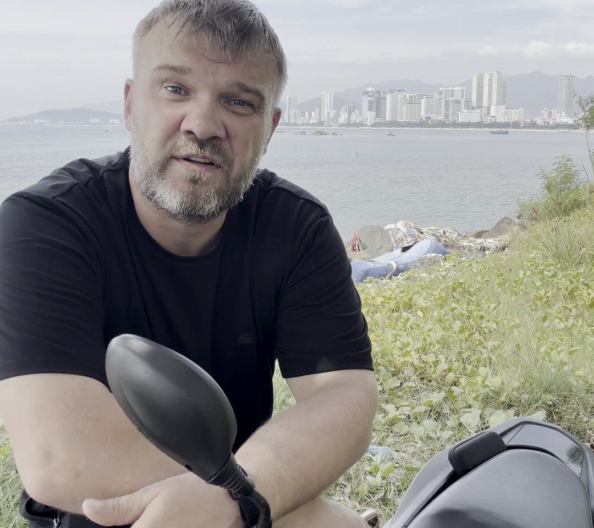

Веду практику из Вьетнама — без глянца и эзотерических красивостей, просто работающий метод.

Почему Вьетнам. Я всю жизнь мечтал о свободе — жить там, где всегда тепло и вокруг позитив, а не серая рутина. Когда сам прошёл путь освобождения от программ, которые годами тянули меня на дно, я стал иначе видеть, понимать и чувствовать — и людей, и мир. Появилось желание не быть навсегда привязанным к одному месту, как к заводу, а увидеть другую культуру и другой темп жизни. Вьетнам дал мне именно это — тепло и пространство. Работаю онлайн, поэтому расстояние не мешает: сессии идут так же, как если бы мы были в одном городе.
Как я выгляжу — не значит, как я работаю. Я не подхожу под привычный образ «мягкого эзотерика» — прямой, немногословный, без цветастых метафор. Но метод, с которым я работаю, — тонкий и требует точности: подсознание не обманешь красивыми словами, там важна техника, а не образ.
Как я пришёл к работе с подсознанием. Я не пришёл в эту профессию из книжек. Я был зависимым — от алкоголя, от марихуаны, от женщин: изменял, не мог хранить верность, метался между отношениями, которые сам же и разрушал. Был нервным, злым, взрывным — раздражался на ровном месте. Из всего этого меня вытащила не сила воли и не разговоры «про это» — а гипнотерапия и работа с подсознанием. После этого я начал по-настоящему учиться: прочитал десятки книг и прошёл обучение в American Academy of Hypnosis — дипломы и сертификаты имеются. Так я оказался по другую сторону: помогаю людям выйти из того, из чего когда-то вышел сам.
Кому я помогаю. В основном — женщинам, которые застряли в эмоциональной зависимости после расставания: постоянные мысли о бывшем, психосоматика, ощущение, что жизнь стоит на паузе. Моя работа — убрать не симптом, а саму программу зависимости в подсознании, чтобы вернуть человеку управление своей жизнью.
Как я работаю. Через транс и точечную работу с подсознательными установками — без многомесячной терапии «поговорить и разойтись». Обычно это программа из 8 сессий на протяжении 2 месяцев.
Оставь заявку — обсудим твою ситуацию и разберём, подходит ли тебе эта программа.
Оставить заявку